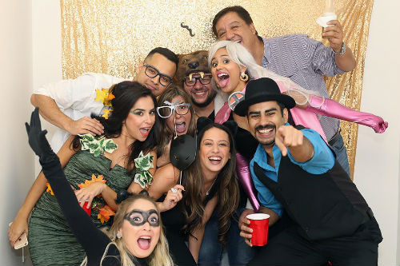

Sobre el autor... o autores
¡Hola amigos! Mi nombre es Alvaro Jossué... el de camisa blanca en la foto.
He creado este blog con el objetivo de compartir con ustedes lo más reciente del ocio electrónico.
En este sitio podrán encontrar:
- Noticias sobre tecnología y social media
- Reseñas de videojuegos
- Consejos para una vida geek
- Artículos sobre cine y TV
- Cualquier otro tema que creamos interesante...LOL
El equipo editorial está compuesto por otras ocho personas de diferentes partes del mundo, lo que enriquece aún más este blog.
Equipo editorial
| Nombre | Lugar | Edad | ¿Algo más? |
|---|---|---|---|
| Alvaro | Nicaragua | 25 | 100% Madridista |
| Jose | Colombia | 23 | Cinelófico |
| Manuel | EE.UU | 20 | Geek |
| Humberto | Cuba | 34 | Bromista |
| Sara | México | 22 | Lifestyle cheek |
| Alejandra | Venezuela | 24 | Adicta al FB |
| Sofia | España | 25 | 100% Barcelona |
| Victoria | Perú | 25 | #Foreveralone |
| Camila | Nicaragua | 21 | La baby |
En Cultura Beta, aunque vengamos de diferentes lugares y hablemos español de diferentes maneras, somos una sola familia.
Estos son 10 cosas que nos gusta hacer juntos:
- Trabajar (duh!)
- Ir de fiestas todos los jueves... sí, jueves
- Cocinar los platos típicos de nuestros países
- Ir al cine en los días de estreno
- Probar las mejores aplicaciones de la semana
- Celebrar los cumpleanos de cada uno con mariachis
- Disfrazarnos de la misma temática para Halloween
- Hacer reuniones con nuestros seguidores
- Asistir a la presentaciones de la industria tech
- Simplemente no hacer nada